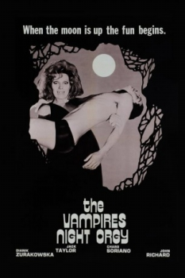

Also known as:La orgía nocturna de los vampiros (original title)
Country:Spain, 80 minutes
Spoken languages:Spanish
Genres:Horror
Director(s):León Klimovsky
Writer(s):Gabriel Moreno Burgos, Antonio Fos
Video Codec:Unknown
Number: 2885


Certification:R
Storyline:
A busload of tourists stops in to visit a small European town. What they don't know is that the town is completely inhabited by vampires.
Cast:
Medium: Original DVD,
Loaned: No
Aspect ratio: Unknown